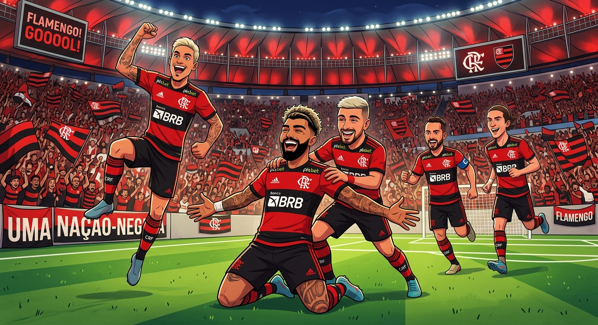
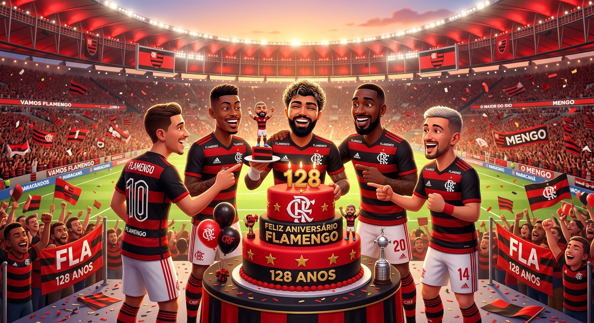
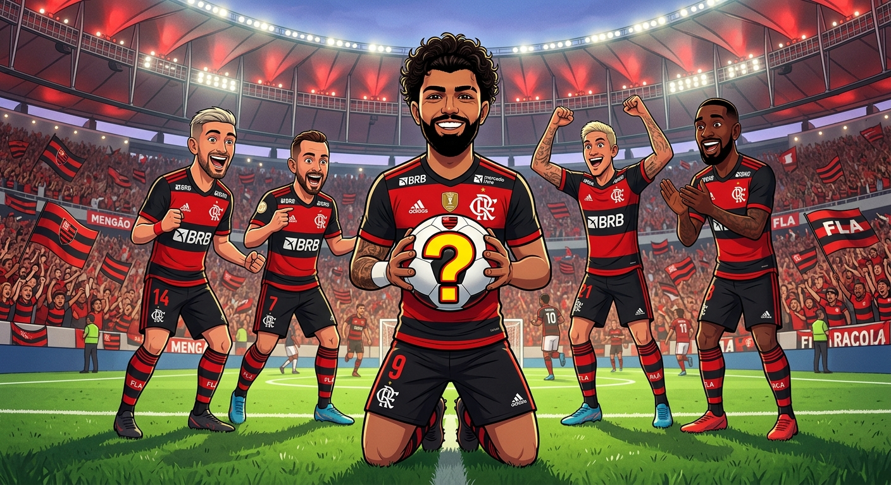
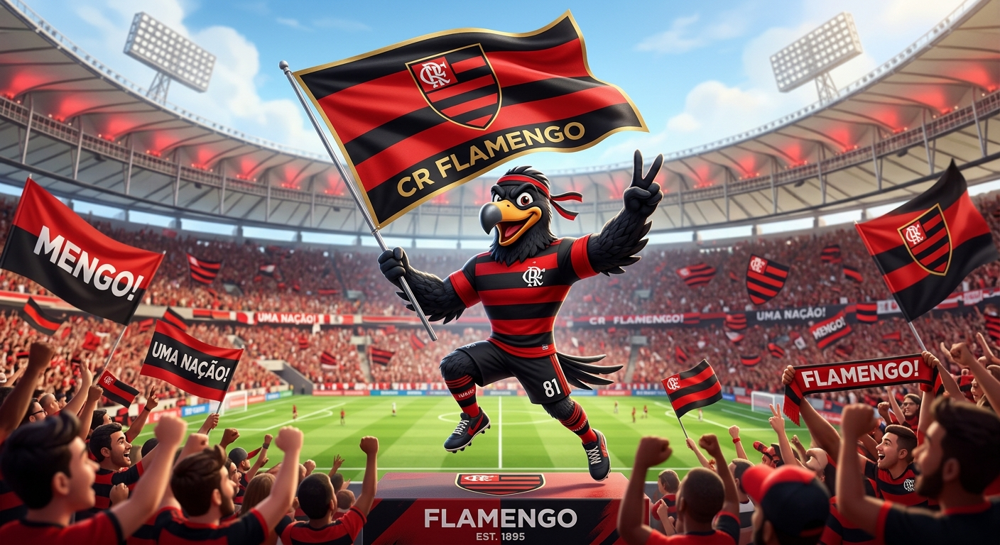

Meu primeiro post
class="artigo-autor">Por: Gabrielle Fabiola
Boas-vindas ao meu novo blog! Aqui vou compartilhar curiosidades sobre o Flamengo.
class="subtitulo">Vou compartilhar curiosidades sobre o Flamengo

class="artigo-autor">Por: Gabrielle Fabiola
Boas-vindas ao meu novo blog! Aqui vou compartilhar curiosidades sobre o Flamengo.
.jpeg) Cores Originais eram Azul e Amarelo
Cores Originais eram Azul e Amarelo
class="artigo-autor">Por: Gabrielle Fabiola
As primeiras cores do clube eram azul e amarelo-ouro. Os tecidos importados desbotavam muito rápido no sol do Rio de Janeiro. O alto custo para repor o material fez a diretoria trocar o uniforme para o tradicional vermelho e preto em 1896.
Fonte: Netshoes

class="artigo-autor">Por: Gabrielle Fabiola
O clube foi fundado oficialmente no dia 17 de novembro, mas a data comemorativa oficial foi alterada para 15 de novembro. O objetivo foi coincidir o aniversário do time com o feriado nacional da Proclamação da República.
Fonte: Recreio

Por: Gabrielle Fabiola
O departamento de futebol só foi criado em dezembro de 1911. Jogadores de remo foram contra a novidade no início. A adesão aconteceu após a chegada de dissidentes do Fluminense liderados por Alberto Borgerth. A primeira partida oficial ocorreu apenas em maio de 1912.
Fonte: Guia De Curiosos

Por: Gabrielle Fabiola
A alcunha de urubu era um termo pejorativo e racista usado por torcidas rivais na primeira metade do século XX. Em 1 de junho de 1969, torcedores levaram um urubu vivo com uma bandeira do Flamengo para o gramado do Maracanã. O time venceu a partida contra o Botafogo, quebrou um jejum de quatro anos sem vencer o rival, e a torcida adotou o animal de vez
Fonte: A BOLA
.jpeg)
Por: Gabrielle Fabiola
O Flamengo possui mais de 150 gravações musicais dedicadas à sua história e torcida. A forte ligação com a cultura popular rendeu ao clube o título simbólico de time mais homenageado em canções no Brasil.
Fonte: Estante rubo negra